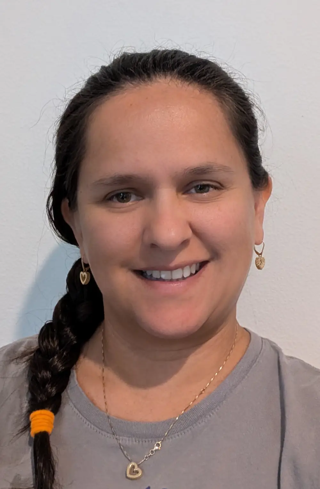

Silvia Ferran | WDD130
My name is Silvia Ferran, and I’m originally from Colombia. I currently live in the Orlando, Florida area with my family. We love spending time together at Disney—especially with my 7-year-old daughter, who brings so much joy to every trip. She has Down syndrome and adores swimming and singing karaoke. I hold a bachelor's degree in Economics, but I’m now pursuing an entirely new field: programming. I'm genuinely excited about this journey, and so far, I’ve discovered a particular passion for web design. However, I know I still have a long way to go before I can confidently identify my ultimate career focus. Each day brings new challenges and learning opportunities, and I’m eager to continue exploring and growing along the way.
- Barranquilla Colombia
- Manti Utah Temple
- Rome Italy Temple